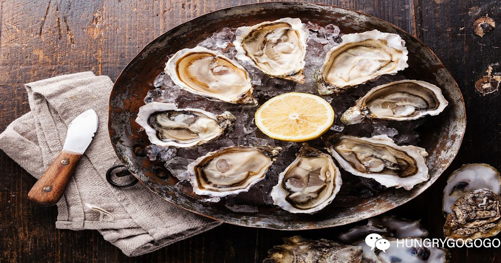
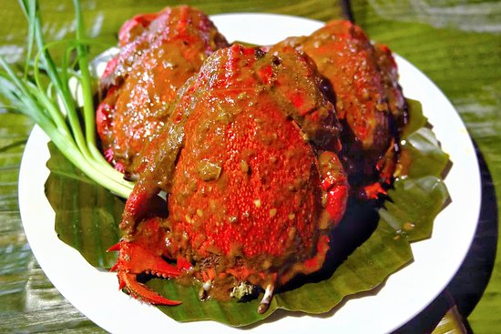
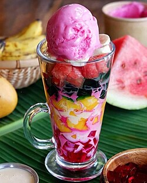
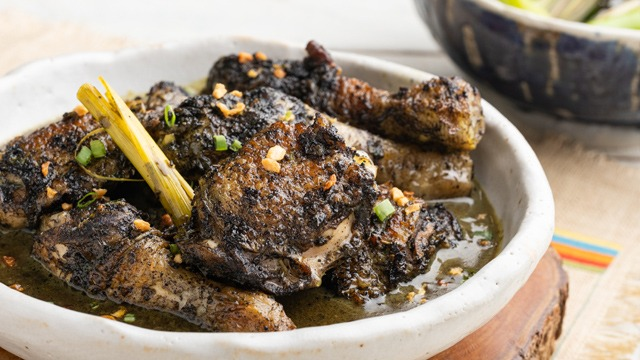

Local Food & Delicacies
A taste of Sibugay's rich culinary heritage

Sibugay Oysters (Talaba)
Known as the "Oyster Capital of the Philippines," Sibugay offers the largest and juiciest oysters in the country. They are often served fresh, steamed, or grilled to perfection.
Where to try it: Ipil Boulevard Food Stalls and local restaurants in Kabasalan.
Lokot-Lokot
A crunchy, golden-brown delicacy made from fine rice flour and water. The batter is fried through a coconut shell with holes, creating a distinct "bird's nest" appearance.
Where to try it: Public Markets and Pasalubong Centers throughout the province.

Curacha with Alavar Sauce
A premier deep-sea crab found in the Sulu-Celebes Sea. While famous in Zamboanga, it is a staple in Sibugay seafood platters, usually smothered in a rich, coconut-based Alavar sauce.
Where to try it: Seafood specialty restaurants in Ipil and Tungawan.

Knickerbocker
A refreshing local dessert consisting of fresh fruit chunks (watermelon, mango, banana), gelatin, and cream, topped with a generous scoop of strawberry or vanilla ice cream.
Where to try it: Dessert shops and seaside cafes along Ipil Boulevard.
Kurma (Tausug Sweet Dessert)
A traditional Tausug delicacy commonly found in the Zamboanga Peninsula region. Kurma is made with beef or chicken cooked in a thick, sweet, and spiced sauce using peanut butter, coconut milk, and spices. It is often served during special occasions.
Where to try: Local Muslim eateries and carinderias in Ipil, Zamboanga Sibugay

Chicken Pianggang
A Tausug-inspired dish popular in the Zamboanga Peninsula region. It is made with chicken cooked in burnt coconut meat, coconut milk, and spices, giving it a rich dark color and smoky, savory flavor. It is often served during special occasions.
Where to try: Selected restaurants and Muslim food stalls in Ipil and nearby towns